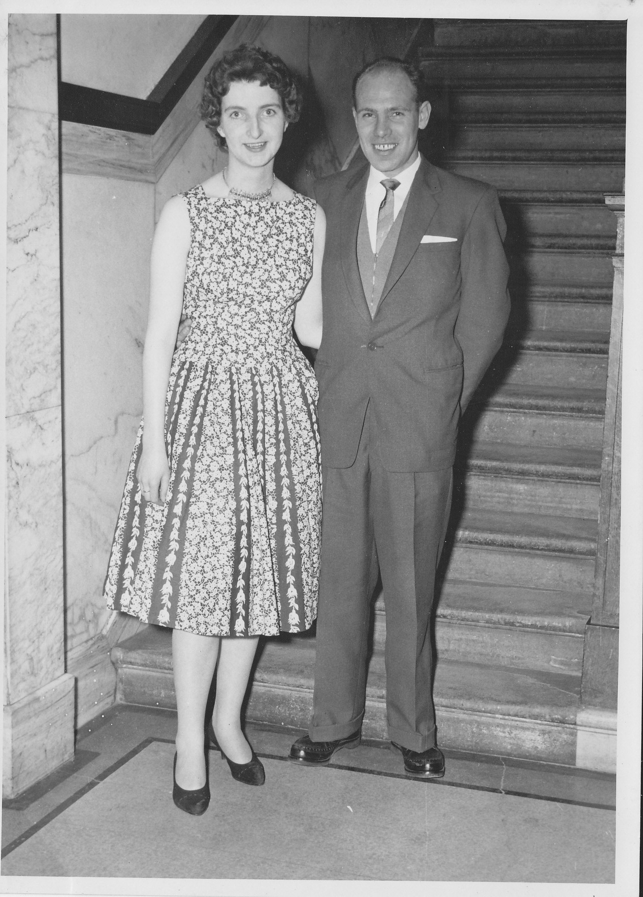

JAMES BRYCE
Born:01-NOV-1934
in Airdrie House Hospital, Airdrie,Scotland
Died:23-JUN-1981
in Newhouse,Scotland
Occ: Lorry Driver
Notes
Married:06-JUN-1957 in Airdrie
JANET LOWE BUCHAN
Born:28-NOV-1934
in 89 Kelvin Drive, Airdrie.
Died:16-NOV-2014
in Monkland Hospital(Ward 22, 3:15PM),Airdrie,Scotland
Occ: Textile Machinist
Notes
Children:
Linda Sarah(1965)
James(1967)
April(1968)
[ Bryce Home ] [ Buchan Home ]